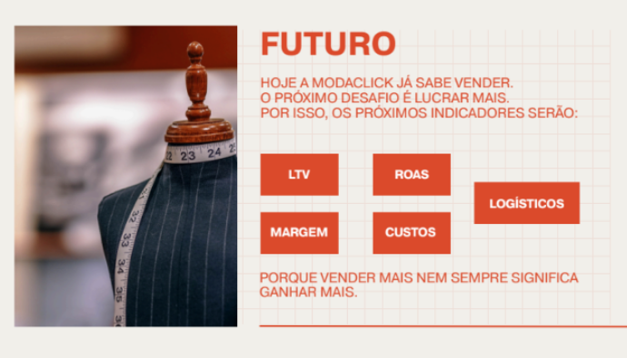

(04) CASE · MARKETING ANALYTICS
MODA CLICK
Análise estratégica de um e-commerce de moda com indicadores de desempenho: encontrar os gargalos, otimizar os canais digitais e propor ações para um crescimento sustentável.
O DESAFIO
Baixa conversão de vendas
Alto abandono de carrinho
Baixa recompra de clientes
Dependência da aquisição de novos clientes
KPIs analisados
FUNIL DE VENDA
onde a venda se perde
Mapeei a jornada completa do cliente, da visita à compra, com foco nos gargalos do checkout e da conversão.
- Visita ao site
- Página de produto
- Carrinhogargalo
- Checkoutgargalo
- Compra
Ilustração das etapas analisadas (sem dados reais da empresa).
Funil de venda
Mapeamento da jornada do cliente para encontrar os pontos de perda no checkout e na conversão.
CRM & retenção
Estratégias de relacionamento e e-mail marketing para aumentar a recompra e a fidelização.
Canais digitais
Análise de desempenho de Instagram, TikTok e e-mail marketing para definir onde investir.
InstagramTikTokE-mail marketing
O PRÓXIMO PASSO
Hoje a ModaClick já sabe vender. O próximo desafio é lucrar mais.
Por isso, os próximos indicadores serão:
LTVROASMargemCustosLogísticos
“Porque vender mais nem sempre significa ganhar mais.”
